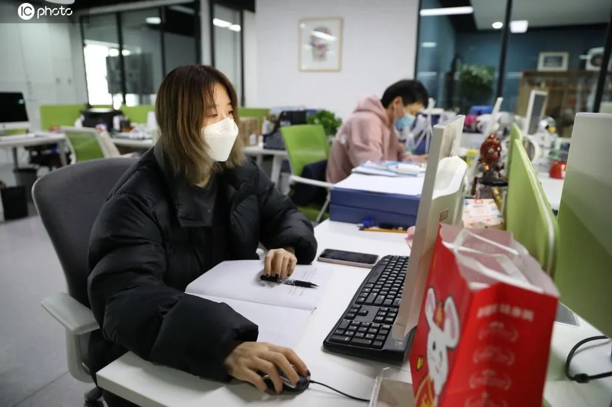
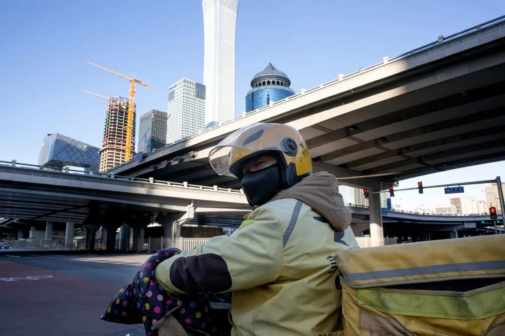
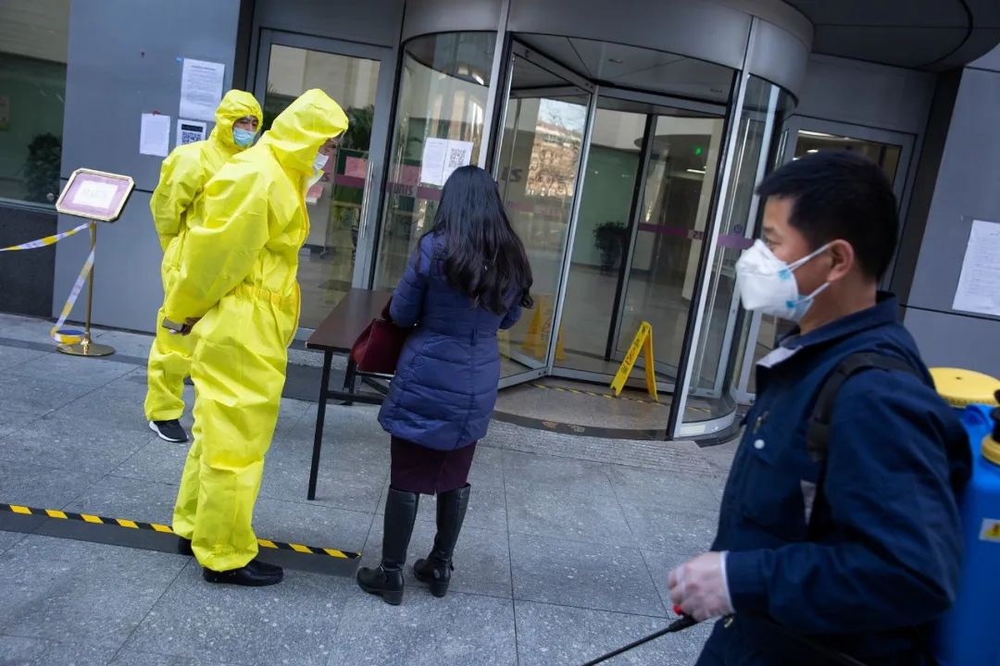
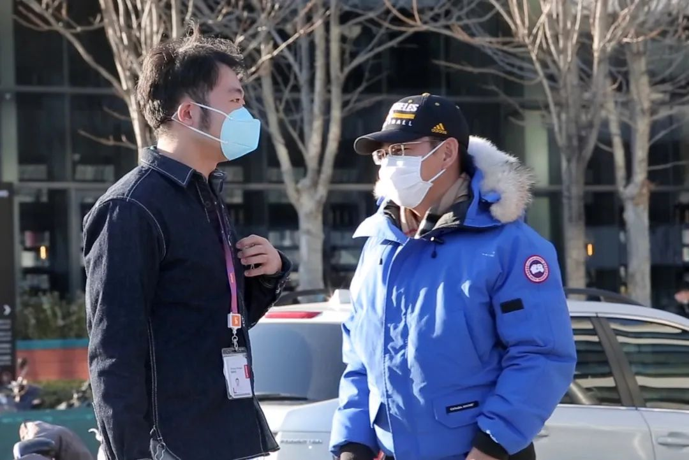
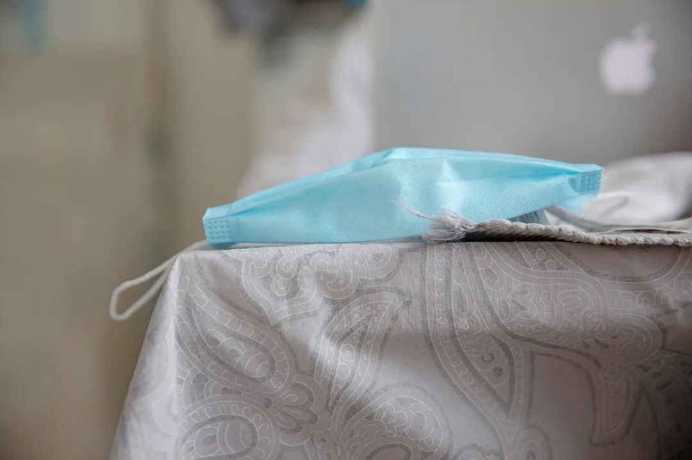
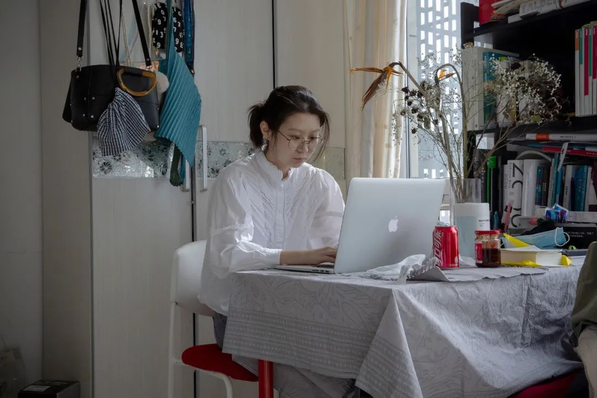

开工了，可我没口罩
原文链接 备份链接 以下文章来源于AI财经社 ，作者AI财经社作者 开工前最忧伤的段子可能是，“今天戴着口罩去买口罩，口罩没买到，还损失了一个口罩。” 2月10日起，部分企业陆续复工，宅在家里即为国家做贡献的使命宣告终结。当下的主要矛 …

摘要：疫情以来，企业复工日期一再调整，何时能回到办公室成为人们最关心的事情之一。2月10日以来，人们陆续回到岗位，有的经历旅途波折，有人面临待业裁员。经过这个漫长的假期，人们有种恍若隔世的感觉。不管怎样，返岗上班或许是生活回到正轨的标志。
文｜王一然
图、视频｜吕萌（除署名外）
编辑｜王珊 林鹏
返岗
很难想象，“能正常上班”有一天会成为奢侈的愿望，至少红酒线上运营专员林康这样觉得。他在北方一家红酒连锁公司上班，是国家二级品酒师。2月初，他就在家忙碌，准备推出一款情人节礼盒：两支酒，一红一白，特意选了带有丘比特LOGO的酒庄。
只待复工第一天返岗，林康就可以去公司，和销售们对接。这笔绩效提成能满足他2月的愿望：买个好用的电推子，还想买台电钢琴学电子音乐编曲。
受疫情影响，在多个省市的复工通知中，2月10日成了许多人返岗上班的第一天。经过一个空前漫长的假期，对很多人来说，这或许是生活回到正轨的标志。

2020年2月19日，朝阳区首创·郎园Vintage复工，企业员工正在办公区内办公。图片来自：东方IC
上市公司的中层领导田真已经被在家办公折磨得“苦不堪言”，每天早上9点到晚上6点半，除了在钉钉上打卡之外，也要按照平时上班要求：正装、领带和得体的发型——小区附近没有理发店开门，田真只能让妻子照着抖音视频给自己理发，“前边就跟狗啃过一样”。大小会议都需要视频沟通，几天之后，田真找到了偷懒的办法，他刮了胡子，行头整齐，但镜头照不到的下身只穿了一条大裤衩。
“北漂”多年的河北人吴天也想尽快返岗，“实在不想哄孩子了！”他在一家教育机构工作，平日早出晚归。最初假期延长时，他特别高兴，“终于能多陪陪儿子了。”到了2月3日，复工又推迟一周，儿子幼儿园没开学，每天闹着出去，吴天和妻子轮番上阵安抚，家里玩具玩了个遍，也消磨不了一个6岁男孩想去上游泳课的热情。

2020年2月16日，北京地铁10号线上戴口罩的乘客。
比吴天还着急的是90后创业者祁莫，他是武汉人，小公司紧邻华南海鲜市场。武汉“封城”后，“出小区都费劲，项目也黄了几个，工人们也回不来。”济南一家实体企业总经理王含几乎数着日子过，他住的小区就有确诊病例，全封闭管理，眼看公司开工，部分员工都陆续返岗，王含只能“遥控指挥”，“需要签字的文件攒了一摞。”
2月10日一早，26岁的设计师许娜戴着蓝色一次性口罩，站在中关村苏州街附近的写字楼前，年前公司年会后，也是站在这儿，她和同事约好“回来吃老金的涮羊肉”，但回来的同事不到一半，“有种恍若隔世的感觉。”

2020年2月16日，北京国贸桥下的外卖员。
一上午，许娜被测了4次体温。小区门口保安24小时严阵以待，出入凭条；写字楼物业门岗处，公司名称和楼层都要核对，电梯里弥散着浓重的消毒水味，许娜隔着纸巾按键，后勤人员就隔两个小时一次，到她工位上测量体温。口罩和小瓶消毒液取代了平时包里的补妆用品，“就露俩眼睛，脸都可以不洗了。”来公司值班的人只有几个，坐她对面的同事敲了敲桌子，晃了晃手机，微信对话框里发来问候：“年怎么过的？中午去哪吃饭？”
没许娜那么幸运，杨丽卡在了写字楼门口。她和三个同事顺路拼车一起去公司，写字楼在天津和平区CBD中心区域，到了门岗处，保安看着体温枪惊问：“你们怎么全都高烧？”“可能是车上的空调！”折腾了20多分钟，重新再测几次，体温都正常，才被放上楼。第二天，有员工家附近的小区发现确诊病例，公司领导决定继续在家办公。

2020年2月17日，北京海淀区紫光大厦外，安保人员检查来访者的个人信息。
林康已经线上办公了一周。公司要求每天写工作日志，但线下销售基本没有工作可做，尤其是负责餐饮酒店等大客户的业务员，一天下来，一个业务员的日志就憋出两条：1.今天去了客户公司，没开门。2.等待群里分派任务。第二天的日志几乎雷同：1.今天去了客户公司，又没开门。2.等待群里分派任务。
2月10日复工这天早上，林康醒来准备上班，头发之前就拿给猫剃毛的推子推得利索干练，“防毒面罩”也准备好了。但拿起手机时，他发现人力在群里发了一条消息，那是一条几乎针对全员的“待岗通知”：
复工日期待定，复工之前工资只支付当地最低工资标准的70%。

2020年2月17日，北京市海淀区后厂村，多家互联网公司已复工，图为戴口罩交流的园区工作人员。
再这么下去可能要被开除了
待岗之后，人力要求每个人写一份今年的工作计划。林康在家里闷着，没什么思路，戴着“防毒面具”下去扔垃圾，想透透气。这是前两年雾霾时，林康买来的防护品，当时觉得“有些小题大做”，疫情之后，口罩脱销，面具派上了用场。“情人节计划”付诸东流，林康看着已经做好的海报，有些失落，晚上和恋人视频时，他怕对方担心：“我存款还能撑俩月呢。”
林康已经跟恋人异地快一个月了。恋人从事建筑工程，原计划2月3日从沈阳回北京，票定了几次，但公司防护用品不足，工地也无法开工，只能退票。

疫情扩大后，为雾霾天准备的口罩成了很多上班族的“救命稻草”。

为了安全，有的上班族每天都会用消毒液擦拭地面。
也有人一出门就被繁复的证明和公章“劝退”。广西男生张明家在南宁，公司和小区城区相邻，小区实行封闭管理后，返工人员需要提供企业复工批文复印件；之后到社区办理居住证明，再到医院体检办理健康证明；手续齐全后回到社区填写通行证申请表，再由居委会和卫健委审核盖章，写个人承诺书后，才能由城区政府审核发出入通行证。折腾了一圈，最终还是失败了，社区回复他，公司属于个体户经营，不在复工范围内。

2020年2月20日，在中通快递山西转运中心，复工人员开始投入工作中。中通快递山西省管理中心在做好疫情防控消杀的情况下，鼓励员工分批返岗复工。图片来自：东方IC
温州市永嘉县的周裳或许比他更焦急。他家所在的桥头镇有一人确诊，村里严防死守，封闭管理，无法出行。同事们10号之后已经陆续上班，周裳成为唯一一个在家办公的运营专员。为了证明自己和大家一样，没有在家偷懒，他连吃饭都要发电脑在旁边的照片，“比去上班还累”。他担心，“再这么下去可能要被开除了。”
企业的复工之路也没那么容易。钱娟是一家中小型企业老板，除夕开始就在各大电商平台上为员工们采购口罩和消毒用品，最后只买到两包一次性口罩和几瓶84消毒液，她又开始联系微商。“防护不到位，根本不敢让大家冒险，我们不开工，每月硬性支出的亏损差不多30万。”
某国企公司的盈利部门全是劳动密集型产业，人力资源部工作人员许佳说，采购的防护品，至今还有一万个口罩没有发货，工厂现在根本不敢复工。“我们分公司今年盈利目标是8000万，那么到现在也就剩10个多月了，完不成绩效也全要受影响。”

北京一家防护服生产厂从大年初四开始就进入复工状态。图为2020年2月11日，生产车间一名员工正在对防护服进行检验。

2020年2月11日，防护服缝纫生产线的工人正在加紧生产。
压力之下，很多企业没能熬到春天。2月10日，“新潮传媒集团宣布裁员500人”的消息刷屏。
林康公司的线下门店已经关了20多天，1月工资发不出来，员工们在群里“讨薪”，财务安慰：“大家再等等。”等到后来，公司的销售员和实习生陆续接到了辞退电话。
公司把员工大体分成了四拨人：第一批是公司物业、水电，轮班值岗时正常发工资，其他时候算请假，没有工资；第二组是林康这些负责线上业务的员工，从2月10日开始一直到复工之前，只发当地最低工资标准的70%，大概一千多块；第三类是在外地无法按时返工的线上业务人员，复工前没有任何薪资；第四种是被解聘的员工，大多是实习生和没有正式合同、靠业务提成的销售们。由于这些员工没有劳动合同保障，只能交接工作等待当月的工资结算。

2020年2月19日，辽宁沈阳，一家复工的公司，工人正在食堂吃午餐。图片来自：东方IC
生机与转机
一周过去，2月17日，复工的第二个星期一，更多人陆续回到工位。早上8点多，北京上品折扣商厦整层底商就被纵列长队遮住，返工的人们戴着口罩，排了一百多米，在寒风里等待登记测量体温；一家互联网公司的中层领导一上午被测了7次体温，同事喝咖啡时摘了口罩，也就一分钟，就被物业逮个正着，行政人员在全员邮件里提醒，“疫情期间戴口罩是一种礼仪！”
对林康来说，这个星期一依然失业。2月3日那一周，他还卖出过一次几万的大单，其中有支两万多的拉菲，“有钱人的心思捉摸不透，这时候还买酒是给家里消毒吗？”
接到“待岗通知”后，订单彻底为零，他只能在家做今年的“工作计划”PPT。

自2月3日回京后，后厂村某家互联网公司的员工一直在家办公至今。线上工作并不比坐班轻松，几乎24小时在线，周末也要工作。

复工日期不断推后，在家办公的人除了忙工作，大多还要自己做饭、洗碗，有人开始怀念离开家，去公司正常上班的日子，“有点想念公司的食堂了。”
他本来打算下半年左右就辞职，和朋友一起创业，做游戏相关的社交平台。但自己的公司无法复工，基本工资都没法保障外，朋友那边的项目计划也都搁置，一切又迷茫起来。
林康一米七多，体重已经超过200斤，患有糖尿病。恋人在沈阳，2月初得了感冒，不敢去医院，林康每晚鼓励他：“我们离病毒还很远。”但在家待岗的第三天，林康得知，一位糖尿病病友因新冠肺炎去世，“人一下没了，那时候特别害怕，觉得疫情和每个人都息息相关。”
那之后林康彻底投入直播，每天一醒来就打开摄像头，一个星期赚了一百多块钱。直播内容以日常生活为主，画画、跳热门抖音舞、打游戏、听歌、在床上打滚儿，还“掌握了各种新技能”：第一次自己做饭，可乐鸡翅和蜜汁鸡翅，“算俩菜吧？”
除了刷新闻、玩游戏，绘画、厨艺这些平日里无瑕顾及的爱好被很多人重拾。
无事可干时，盯着家里的静物发呆，成了疫情中很多人的一种常态。
有时林康半天不动，粉丝问他“在播什么？”
“直播发呆啊。”林康说，“很多人在家没事干，你干什么都有人看。”
经过漫长的等待，义乌国际商贸城终于开市，横店影视城也已宣布剧组将分阶段复工，海底捞恢复了外送服务，北京29家美容美发店已经营业，但要求理发师没事别和顾客聊天。一家卖饺子馄饨的门店窗口试开业一上午，来买的人们都戴着口罩，隔出一两个人的距离，有个顾客小心翼翼地问师傅：“剁馅儿时候戴口罩了吗？”
截止到2月17日，北京CBD功能区内，已有约5万家企业陆续复工，占企业总数九成以上；广州天河区商务楼宇复工复产几乎百分之百。
从天津返工的工程师李显在北苑租房，怕高速封路，正月十五之前就赶回来。车行一路畅通无阻，李显盯着窗外，大街上人影稀疏，车流锐减，以往后备箱里是吃的，今年都是能凑得到的消毒防护用品。李显把车停好，在楼下歇了会儿。
“那时候突然很想那个拥堵的、特别有人气儿的北京。”

期待早日复工的互联网员工。
（为保护隐私，文中人物为化名）
后台回复”读者群”, 加入更多讨论

小昼
长按二维码向我转账
受苹果公司新规定影响，微信 iOS 版的赞赏功能被关闭，可通过二维码转账支持公众号。
原文链接 备份链接 以下文章来源于AI财经社 ，作者AI财经社作者 开工前最忧伤的段子可能是，“今天戴着口罩去买口罩，口罩没买到，还损失了一个口罩。” 2月10日起，部分企业陆续复工，宅在家里即为国家做贡献的使命宣告终结。当下的主要矛 …
原文链接 备份链接 _ 2月10日这个周一，中国多个省市迎来了春节后第一个工作日，虽然比原定假期已推迟一周，但政府、企业和个人所面临的疫情防控压力都不小。当前，湖北省仍需要着力抓好疫情防控，其他地区也需要做好防控的同时有序恢复生产 _ …
原文链接 [备份链接]() *************▲*************2020年2月18日，呼和浩特一家公司的员工正在赶制口罩。 （新华社/图） 全文共5770字，阅读大约需要8分钟。 虽然是在生产口罩，杨洋自己家里的口罩还 …
原文链接 备份链接 澎湃新闻记者 朱雷 一天量四次体温，除了吃饭，都要戴好口罩。这已经成为李奥（化名）复工以来的日常。 他在广东省潮州市一家电子元件公司做设备管理，自从12日解除隔离，他到目前已经复工6天了。 2月18日，李奥告诉澎湃新 …
原文链接 备份链接 “ - 疫 情 之 下 - 她们加班加点的多生产一片，老百姓就少一份因为口罩紧缺带来的恐慌；多生产一片，政府部门的抗疫情压力就会减轻一份；多生产一片，人与人之间就多了一个传递守护和关心的桥梁。 ” 1 作为一个只有79 …